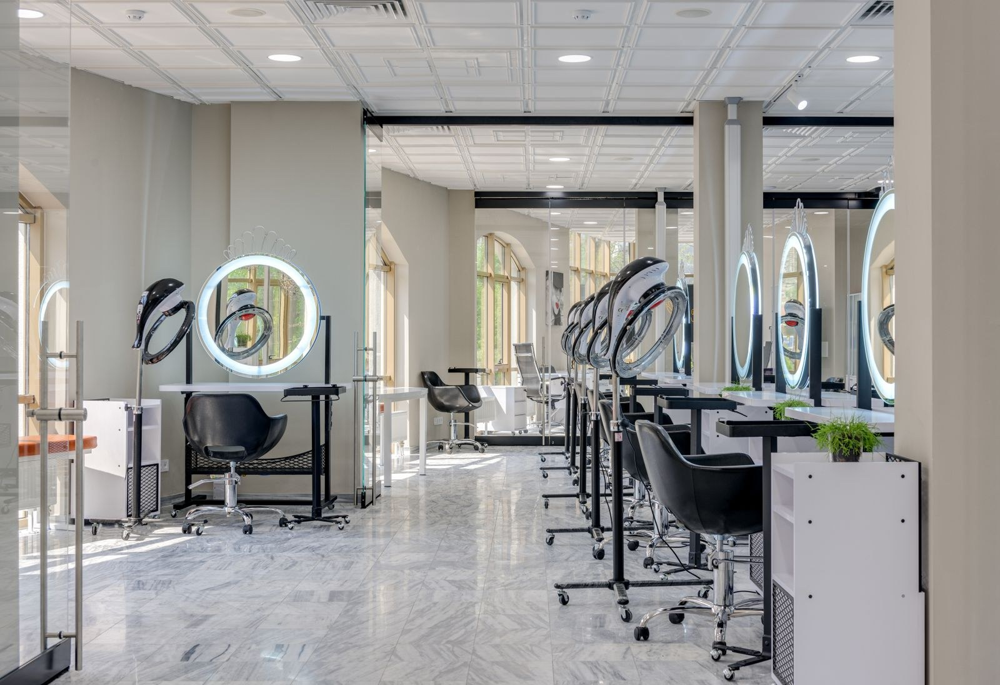

Een coupe die je zelf kunt bijhouden.
We kijken naar je haar, de vorm en hoe je het zelf draagt. Je kunt een voorbeeld meenemen of samen bespreken wat bij je past.
Knipbeurt besprekenEven overleggen, dan de schaar erin. Je bent welkom voor een knipbeurt, een nieuwe kleur of advies over je haar.
Bekijk behandelingen Een afspraak besprekenKies een behandeling om er meer over te lezen.
1 keuze zichtbaar
We kijken naar je haar, de vorm en hoe je het zelf draagt. Je kunt een voorbeeld meenemen of samen bespreken wat bij je past.
Knipbeurt besprekenVan een subtiel verschil tot een grotere verandering. We bespreken eerst wat er met je haar mogelijk is en welk onderhoud erbij hoort.
Kleurbehandeling besprekenNeem voorbeelden mee die je mooi vindt. We bekijken je haar en leggen uit welke keuzes passen bij de lengte en structuur.
Advies bespreken
Een afspraak begint met even bijpraten en bespreken wat je wilt. Zo weten we allebei waar we aan beginnen.
Kies de behandeling en vertel wat je wilt laten doen. Als je een grote verandering overweegt, is vooraf overleggen handig.
Neem gerust een foto mee van de coupe of kleur die je mooi vindt.